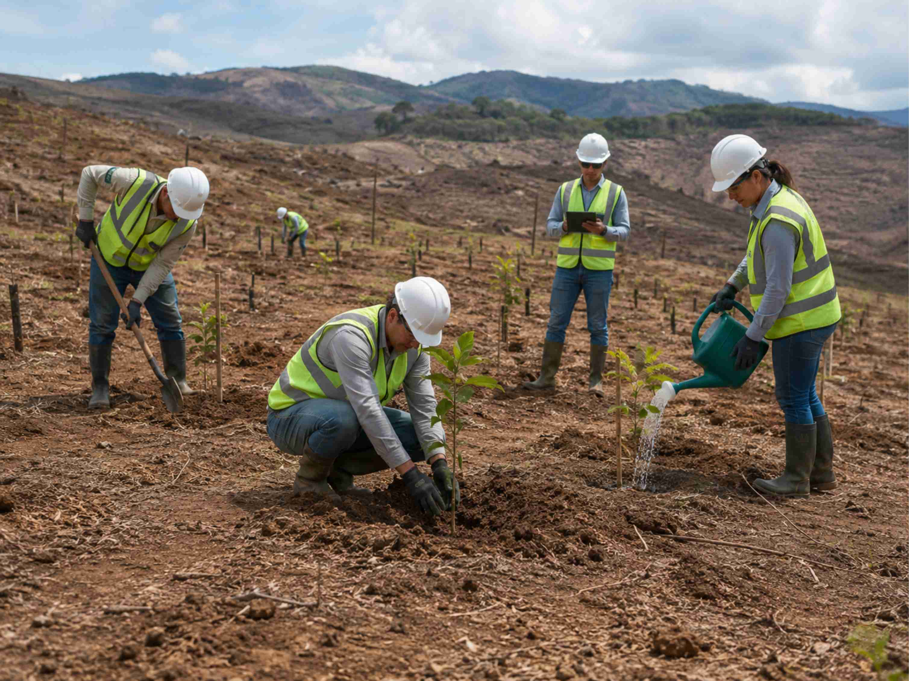
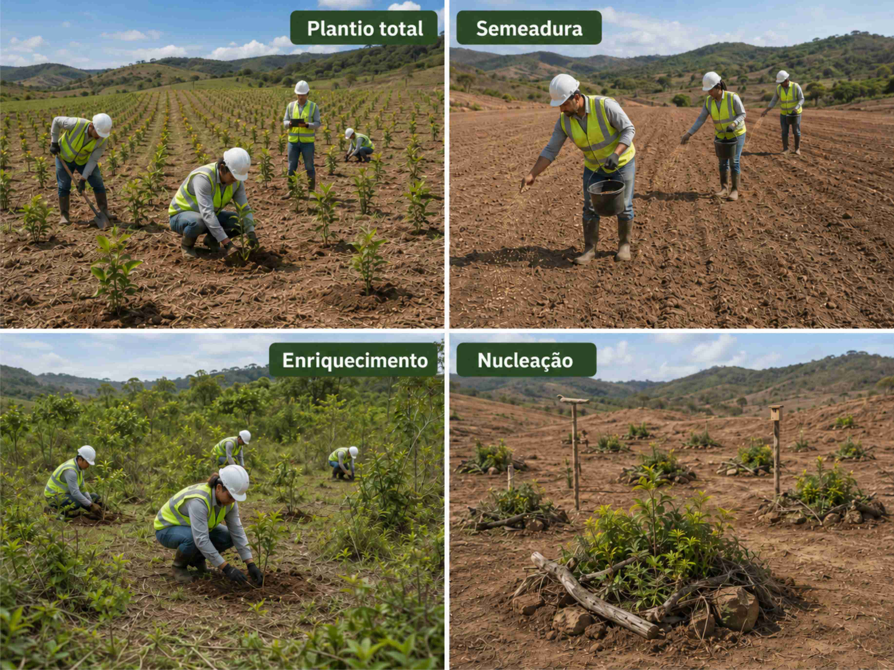

PRAD - Plano de Recuperação de Área Degradada
Diagnóstico em campo, planejamento multidisciplinar, execução e monitoramento de indicadoes
Como construíremos o seu PRAD
A elaboração do PRAD parte da compreensão das condições atuais da área e da definição de uma estratégia técnica compatível com o grau de degradação, o uso anterior e futuro do terreno, as exigências do órgão ambiental e a capacidade de regeneração natural do ambiente.
O plano pode envolver medidas como isolamento da área, controle de processos erosivos, correção e preparo do solo, recomposição da vegetação nativa, plantio de mudas, semeadura direta, condução da regeneração natural, controle de espécies invasoras, implantação de dispositivos de drenagem, estabilização de taludes e monitoramento periódico dos resultados.
A metodologia de elaboração e implantação de um PRAD envolve quatro grandes etapas:


Principais soluções para recuperação de áreas degradadas
A recomposição de áreas degradadas pode ser executada por diferentes técnicas de reflorestamento e restauração ecológica. A escolha depende do grau de degradação da área, da presença ou ausência de regeneração natural, das condições do solo, da disponibilidade de sementes e mudas, da pressão de uso no entorno e dos objetivos definidos no PRAD.
Em áreas muito degradadas, normalmente são necessárias técnicas mais intensivas, como o plantio total. Em áreas com algum potencial de recuperação natural, podem ser adotadas soluções de menor intervenção, como adensamento, enriquecimento, nucleação ou regeneração natural assistida.
Essas são as principais técnicas de reflorestamento e restauração ecológicas:
A definição da técnica deve ser justificada tecnicamente no PRAD, considerando o diagnóstico ambiental da área, as metas de recuperação, os indicadores de monitoramento e a viabilidade operacional de execução e manutenção.
Precisa recompor uma área degradada?
Envie as informações iniciais para avaliação da demanda e composição de proposta.
Solicitar orçamento